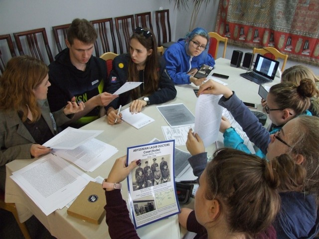

Gazeta ZSO nr II w Opolu
Numer 4/2017
Polsko - niemieckie forum dziennikarzy szkolnych

-Bombardowania jako sposób walki o pokój są tak samo skuteczne jak gwałt w obronie dziewictwa – podsumowuje Kinga czterodniowe dziennikarskie seminarium dla uczniów szkół z Nadrenii-Palatynatu i Opolszczyzny pt.„ Wojna a prawa człowieka”.
Polsko – niemiecka grupa młodych ludzi, w tym troje uczniów z opolskiej Dwójki: Ewa Jurewicz i Michael Skrzypiec z IF oraz Marta Łukaszczyk z IB, pierwszego dnia zwiedziła obóz Łambinowice/Lamsdorf. – Niesamowite wrażenie zrobiło na mnie spotkanie z lotnikiem Waynem Butterworthem, wnuczkiem lotnika Australijskich Sił Powietrznych, zestrzelonego nad Essen, jeńca Stalagu VIII B w latach 1942–1945 – mówi Michael. - Mimo, że mieszkam na Opolszczyźnie nigdy tutaj nie byłam – wyznaje Ewa. - Bardzo dużo się dowiedziałam, bo oprócz zwiedzania, mieliśmy warsztaty w grupach podczas których poznawaliśmy archiwalia i muzealia przybliżające historię tego miejsca, tj. funkcjonowanie obozu jenieckiego Lamsdorf w latach I wojny światowej, losy jeńców polskich, radzieckich i brytyjskich w stalagach Lamsdorf podczas II wojny światowej oraz dzieje powojennego Obozu Pracy w Łambinowicach.
Podczas kolejnych dni uczestnicy dzielili się swoimi wrażeniami i – co nie było proste - próbowali swoje uczucia opisać, najpierw w swoich ojczystych językach a potem przetłumaczyć. Efektem tej pracy są artykuły, reportaże, listy, komentarze, a nawet wiersz - czyli gazetka polsko – niemiecka.
- Deszcz i zimno sprzyjały pracy redakcyjnej, niekoniecznie zaś zwiedzaniu, ale naszej mocnej grupie panujący ziąb nie przeszkodził w ulicznej grze miejskiej. Bo tak zaproponowaliśmy naszym gościom poznawanie Opola. Nasz wspólny pobyt zakończył wypad na kolację - podsumowuje Marta
Seminarium i warsztaty dziennikarskie w Niwkach odbyły się dzięki współpracy i wsparciu Dyrekcji Nadzoru i Usług Nadrenii-Palatynatu, Kuratorium Oświaty w Opolu i Ministerstwa Oświaty w Nadrenii-Palatynacie oraz Niemieckiego Narodowego Związku Opieki nad Grobami Wojennymi.


ul. Pułaskiego 3
45-048 Opole
tel. 077 45 422 86
fax 077 02 18 87
e-mail:
bez.tytulu@o2.pl
Ola Orłowska
DTP
Michał Woś
Opiekun
mgr Lucyna Rudnik
Ola Orłowska, Ania Cichy, Dagmara Cioska, Julia Nowicka, Julia Marcinów, Hania Szarzewicz, Michał Woś, Bartek Lipnicki, Jonasz Mularz, Paweł Kubacki, Mateusz Pietruszyński, Mateusz Orlik